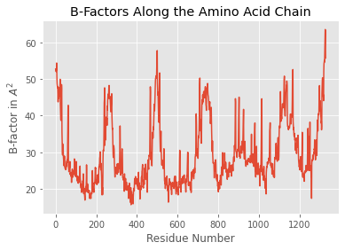
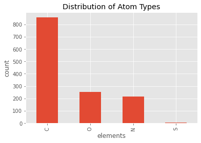

Working with mmCIF Structures in DataFrames
Loading mmCIF Files
There are several ways to load a mmCIF structure into a PandasMmcif object.
1 -- Loading an mmCIF file from the Protein Data Bank
MmCIF files can be directly fetched from The Protein Data Bank at http://www.rcsb.org via its unique 4-letter after initializing a new PandasMmcif object and calling the fetch_mmcif method:
from biopandas.mmcif import PandasMmcif
# Initialize a new PandasMmcif object
# and fetch the mmCIF file from rcsb.org
pmmcif = PandasMmcif().fetch_mmcif('3eiy')
2 -- Loading an mmCIF file from the AlphaFold Structure Database
(New in version 0.4.0)
PDB files can be directly fetched from The AlphaFold Structure Database at https://alphafold.ebi.ac.uk/ via its unique UniProt Identifier after initializing a new PandasPdb object and calling the fetch_af2 method:
from biopandas.mmcif import PandasMmcif
# Initialize a new PandasPdb object
# and fetch the PDB file from alphafold.ebi.ac.uk
ppdb = PandasMmcif().fetch_mmcif(uniprot_id='Q5VSL9', source='alphafold2-v2')
3 a) -- Loading a mmCIF structure from a local file
Alternatively, we can load mmCIF files from local directories as regular mmCIF files using read_mmcif:
pmmcif.read_mmcif('./data/3eiy.cif')
<biopandas.mmcif.pandas_mmcif.PandasMmcif at 0x1058967f0>
[File link: 3eiy.cif]
3 b) -- Loading a mmCIF structure from a local gzipped mmCIF file
Or, we can load them from gzip archives like so (note that the file must end with a '.gz' suffix in order to be recognized as a gzip file):
pmmcif.read_mmcif('./data/3eiy.cif.gz')
<biopandas.mmcif.pandas_mmcif.PandasMmcif at 0x1058967f0>
[File link: 3eiy.cif.gz]
After the file was succesfully loaded, we have access to the following attributes:
print('mmCIF Code: %s' % pmmcif.code)
print('mmCIF Header Line: %s' % pmmcif.header)
print('\nRaw mmCIF file contents:\n\n%s\n...' % pmmcif.pdb_text[:1000])
mmCIF Code: 3eiy
mmCIF Header Line:
Raw mmCIF file contents:
data_3EIY
#
_entry.id 3EIY
#
_audit_conform.dict_name mmcif_pdbx.dic
_audit_conform.dict_version 5.281
_audit_conform.dict_location http://mmcif.pdb.org/dictionaries/ascii/mmcif_pdbx.dic
#
loop_
_database_2.database_id
_database_2.database_code
PDB 3EIY
RCSB RCSB049380
WWPDB D_1000049380
#
loop_
_pdbx_database_related.db_name
_pdbx_database_related.db_id
_pdbx_database_related.details
_pdbx_database_related.content_type
TargetDB BupsA.00023.a . unspecified
PDB 3d63
;The same protein, "open" conformation, apo form, in space group P21212
;
unspecified
PDB 3EIZ . unspecified
PDB 3EJ0 . unspecified
PDB 3EJ2 .
...
The most interesting / useful attribute is the PandasMmcif.df DataFrame dictionary though, which gives us access to the mmCIF files as pandas DataFrames. Let's print the first 3 lines from the ATOM coordinate section to see how it looks like:
pmmcif.df['ATOM'].head(3)
| group_PDB | id | type_symbol | label_atom_id | ... | auth_comp_id | auth_asym_id | auth_atom_id | pdbx_PDB_model_num | |
|---|---|---|---|---|---|---|---|---|---|
| 0 | ATOM | 1 | N | N | ... | SER | A | N | 1 |
| 1 | ATOM | 2 | C | CA | ... | SER | A | CA | 1 |
| 2 | ATOM | 3 | C | C | ... | SER | A | C | 1 |
3 rows × 21 columns
But more on that in the next section.
4 -- Loading a mmCIF file from a Python List
Mmcif files can also be loaded into a PandasMmcif object from a Python list:
with open('./data/3eiy.cif', 'r') as f:
three_eiy = f.read()
pmmcif2 = PandasMmcif()
pmmcif2.read_mmcif_from_list(three_eiy)
pmmcif2.df['ATOM'].head()
| group_PDB | id | type_symbol | label_atom_id | ... | auth_comp_id | auth_asym_id | auth_atom_id | pdbx_PDB_model_num | |
|---|---|---|---|---|---|---|---|---|---|
| 0 | ATOM | 1 | N | N | ... | SER | A | N | 1 |
| 1 | ATOM | 2 | C | CA | ... | SER | A | CA | 1 |
| 2 | ATOM | 3 | C | C | ... | SER | A | C | 1 |
| 3 | ATOM | 4 | O | O | ... | SER | A | O | 1 |
| 4 | ATOM | 5 | C | CB | ... | SER | A | CB | 1 |
5 rows × 21 columns
Looking at mmCIF files in DataFrames
mmCIF files are parsed according to the mmCIF file format description.
For more information, we recommend the helpful Beginner’s Guide to PDB Structures and the PDBx/mmCIF Format guide.
After loading a PDB file from rcsb.org or our local drive, the PandasPdb.df attribute should contain the following 3 DataFrame objects:
from biopandas.mmcif import PandasMmcif
pmmcif = PandasMmcif()
pmmcif.read_mmcif('./data/3eiy.cif')
pmmcif.df.keys()
dict_keys(['ATOM', 'HETATM', 'ANISOU'])
[File link: 3eiy.cif]
- 'ATOM': contains the entries from the ATOM coordinate section
- 'HETATM': ... entries from the "HETATM" coordinate section
- 'ANISOU': ... entries from the "ANISOU" coordinate section
The columns for 'ATOM' DataFrame are as follows:
pmmcif.df['ATOM'].columns
Index(['group_PDB', 'id', 'type_symbol', 'label_atom_id', 'label_alt_id', 'label_comp_id', 'label_asym_id', 'label_entity_id', 'label_seq_id', 'pdbx_PDB_ins_code', 'Cartn_x', 'Cartn_y', 'Cartn_z', 'occupancy', 'B_iso_or_equiv', 'pdbx_formal_charge', 'auth_seq_id', 'auth_comp_id', 'auth_asym_id', 'auth_atom_id', 'pdbx_PDB_model_num'], dtype='object')
- 'group_PDB': The group of atoms to which the atom site belongs. This data item is provided for compatibility with the original Protein Data Bank format, and only for that purpose.
- 'id': The value of _atom_site.id must uniquely identify a record in the ATOM_SITE list. Note that this item need not be a number; it can be any unique identifier.
- 'type_symbol': The code used to identify the atom species (singular or plural) representing this atom type. Normally this code is the element symbol. The code may be composed of any character except an underscore with the additional proviso that digits designate an oxidation state and must be followed by a + or - character.
- 'label_atom_id': An atom name identifier, e.g., N, CA, C, O, ...
- 'label_alt_id': A place holder to indicate alternate conformation. The alternate conformation can be an entire polymer chain, or several residues or partial residue (several atoms within one residue). If an atom is provided in more than one position, then a non-blank alternate location indicator must be used for each of the atomic positions.
- 'label_comp_id': For protein polymer entities, this is the three-letter code for the amino acid. For nucleic acid polymer entities, this is the one-letter code for the base.
- 'label_asym_id': A value that uniquely identifies a record in the STRUCT_ASYM list.
- 'label_entity_id': A value that uniquely identifies a record in the ENTITY list.
- 'label_seq_id': A value that uniquely identifies a record in the ENTITY_POLY_SEQ list.
- 'pdbx_PDB_ins_code': PDB insertion code.
- 'Cartn_x': The x atom-site coordinate in angstroms
- 'Cartn_y': The y atom-site coordinate in angstroms
- 'Cartn_z': The z atom-site coordinate in angstroms
- 'occupancy': The fraction of the atom type present at this site. The sum of the occupancies of all the atom types at this site may not significantly exceed 1.0 unless it is a dummy site.
- 'B_iso_or_equiv': Isotropic atomic displacement parameter, or equivalent isotropic atomic displacement parameter, B_eq, calculated from the anisotropic displacement parameters.
- 'pdbx_formal_charge': The net integer charge assigned to this atom. This is the formal charge assignment normally found in chemical diagrams.
- 'auth_seq_id': An alternative identifier for _atom_site.label_seq_id that may be provided by an author in order to match the identification used in the publication that describes the structure.
- 'auth_comp_id': An alternative identifier for _atom_site.label_comp_id that may be provided by an author in order to match the identification used in the publication that describes the structure.
- 'auth_asym_id': An alternative identifier for _atom_site.label_asym_id that may be provided by an author in order to match the identification used in the publication that describes the structure.
- 'auth_atom_id': An alternative identifier for _atom_site.label_atom_id that may be provided by an author in order to match the identification used in the publication that describes the structure.
- 'pdbx_PDB_model_num': PDB model number.
The columns of the 'HETATM' DataFrame are indentical to the 'ATOM' DataFrame that we've seen earlier:
pmmcif.df['HETATM'].head(2)
| group_PDB | id | type_symbol | label_atom_id | ... | auth_comp_id | auth_asym_id | auth_atom_id | pdbx_PDB_model_num | |
|---|---|---|---|---|---|---|---|---|---|
| 1330 | HETATM | 1331 | K | K | ... | K | A | K | 1 |
| 1331 | HETATM | 1332 | NA | NA | ... | NA | A | NA | 1 |
2 rows × 21 columns
set(pmmcif.df['HETATM'].columns) == set(pmmcif.df['ATOM'].columns)
True
However, there are a few naming differences in the ANISOU columns, for instance, the 'ATOM' and 'HETATM' DataFrames feature the following columns that are not contained in ANISOU:
set(pmmcif.df['ATOM'].columns) - set(pmmcif.df['ANISOU'].columns)
{'B_iso_or_equiv',
'Cartn_x',
'Cartn_y',
'Cartn_z',
'auth_asym_id',
'auth_atom_id',
'auth_comp_id',
'auth_seq_id',
'group_PDB',
'label_alt_id',
'label_asym_id',
'label_atom_id',
'label_comp_id',
'label_entity_id',
'label_seq_id',
'occupancy',
'pdbx_PDB_model_num',
'pdbx_formal_charge'}
Vice versa, ANISOU contains the following columns that are not in the 'ATOM' and 'HETATM' DataFrames:
set(pmmcif.df['ANISOU'].columns) - set(pmmcif.df['ATOM'].columns)
{'U[1][1]',
'U[1][2]',
'U[1][3]',
'U[2][2]',
'U[2][3]',
'U[3][3]',
'pdbx_auth_asym_id',
'pdbx_auth_atom_id',
'pdbx_auth_comp_id',
'pdbx_auth_seq_id',
'pdbx_label_alt_id',
'pdbx_label_asym_id',
'pdbx_label_atom_id',
'pdbx_label_comp_id',
'pdbx_label_seq_id'}
BioPandas tries to stay to the original column names as close as possible, and for more details, we recommend checking the original descriptions:
Working with mmCIF DataFrames
In the previous sections, we've seen how to load mmCIF structures into DataFrames, and how to access them. Now, let's talk about manipulating mmCIF files in DataFrames.
from biopandas.mmcif import PandasMmcif
pmmcif = PandasMmcif()
pmmcif.read_mmcif('./data/3eiy.cif.gz')
pmmcif.df['ATOM'].head()
| group_PDB | id | type_symbol | label_atom_id | ... | auth_comp_id | auth_asym_id | auth_atom_id | pdbx_PDB_model_num | |
|---|---|---|---|---|---|---|---|---|---|
| 0 | ATOM | 1 | N | N | ... | SER | A | N | 1 |
| 1 | ATOM | 2 | C | CA | ... | SER | A | CA | 1 |
| 2 | ATOM | 3 | C | C | ... | SER | A | C | 1 |
| 3 | ATOM | 4 | O | O | ... | SER | A | O | 1 |
| 4 | ATOM | 5 | C | CB | ... | SER | A | CB | 1 |
5 rows × 21 columns
[File link: 3eiy.cif.gz]
Okay, there's actually not that much to say ...
Once we have our mmCIF file in the DataFrame format, we have the whole convenience of pandas right there at our fingertips.
For example, let's get all Proline residues:
pmmcif.df['ATOM'][pmmcif.df['ATOM']['auth_comp_id'] == 'PRO'].head()
| group_PDB | id | type_symbol | label_atom_id | ... | auth_comp_id | auth_asym_id | auth_atom_id | pdbx_PDB_model_num | |
|---|---|---|---|---|---|---|---|---|---|
| 38 | ATOM | 39 | N | N | ... | PRO | A | N | 1 |
| 39 | ATOM | 40 | C | CA | ... | PRO | A | CA | 1 |
| 40 | ATOM | 41 | C | C | ... | PRO | A | C | 1 |
| 41 | ATOM | 42 | O | O | ... | PRO | A | O | 1 |
| 42 | ATOM | 43 | C | CB | ... | PRO | A | CB | 1 |
5 rows × 21 columns
Or main chain atoms:
pmmcif.df['ATOM'][pmmcif.df['ATOM']['label_atom_id'] == 'CA'].head()
| group_PDB | id | type_symbol | label_atom_id | ... | auth_comp_id | auth_asym_id | auth_atom_id | pdbx_PDB_model_num | |
|---|---|---|---|---|---|---|---|---|---|
| 1 | ATOM | 2 | C | CA | ... | SER | A | CA | 1 |
| 7 | ATOM | 8 | C | CA | ... | PHE | A | CA | 1 |
| 18 | ATOM | 19 | C | CA | ... | SER | A | CA | 1 |
| 24 | ATOM | 25 | C | CA | ... | ASN | A | CA | 1 |
| 32 | ATOM | 33 | C | CA | ... | VAL | A | CA | 1 |
5 rows × 21 columns
It's also easy to strip our coordinate section from hydrogen atoms if there are any ...
pmmcif.df['ATOM'][pmmcif.df['ATOM']['type_symbol'] != 'H'].head()
| group_PDB | id | type_symbol | label_atom_id | ... | auth_comp_id | auth_asym_id | auth_atom_id | pdbx_PDB_model_num | |
|---|---|---|---|---|---|---|---|---|---|
| 0 | ATOM | 1 | N | N | ... | SER | A | N | 1 |
| 1 | ATOM | 2 | C | CA | ... | SER | A | CA | 1 |
| 2 | ATOM | 3 | C | C | ... | SER | A | C | 1 |
| 3 | ATOM | 4 | O | O | ... | SER | A | O | 1 |
| 4 | ATOM | 5 | C | CB | ... | SER | A | CB | 1 |
5 rows × 21 columns
Or, let's compute the average temperature factor of our protein main chain:
mainchain = pmmcif.df['ATOM'][(pmmcif.df['ATOM']['label_atom_id'] == 'C') |
(pmmcif.df['ATOM']['label_atom_id'] == 'O') |
(pmmcif.df['ATOM']['label_atom_id'] == 'N') |
(pmmcif.df['ATOM']['label_atom_id'] == 'CA')]
bfact_mc_avg = mainchain['occupancy'].mean()
print('Average B-Factor [Main Chain]: %.2f' % bfact_mc_avg)
Average B-Factor [Main Chain]: 1.00
Plotting
Since we are using pandas under the hood, which in turns uses matplotlib under the hood, we can produce quick summary plots of our mmCIF structures relatively conveniently:
from biopandas.mmcif import PandasMmcif
pmmcif = PandasMmcif().read_mmcif('./data/3eiy.cif.gz')
[File link: 3eiy.cif.gz]
%matplotlib inline
import matplotlib.pyplot as plt
from matplotlib import style
style.use('ggplot')
pmmcif.df['ATOM']['B_iso_or_equiv'].plot(kind='hist')
plt.title('Distribution of B-Factors')
plt.xlabel('B-factor')
plt.ylabel('count')
plt.show()

pmmcif.df['ATOM']['B_iso_or_equiv'].plot(kind='line')
plt.title('B-Factors Along the Amino Acid Chain')
plt.xlabel('Residue Number')
plt.ylabel('B-factor in $A^2$')
plt.show()

pmmcif.df['ATOM']['type_symbol'].value_counts().plot(kind='bar')
plt.title('Distribution of Atom Types')
plt.xlabel('elements')
plt.ylabel('count')
plt.show()

Computing the Root Mean Square Deviation
BioPandas also comes with certain convenience functions, for example, ...
The Root-mean-square deviation (RMSD) is simply a measure of the average distance between atoms of 2 protein or ligand structures. This calculation of the Cartesian error follows the equation:
So, assuming that the we have the following 2 conformations of a ligand molecule

we can compute the RMSD as follows:
from biopandas.mmcif import PandasMmcif
l_1 = PandasMmcif().read_mmcif('./data/lig_conf_1.cif')
l_2 = PandasMmcif().read_mmcif('./data/lig_conf_2.cif')
r = PandasMmcif.rmsd(l_1.df['HETATM'], l_2.df['HETATM'],
s=None) # all atoms, including hydrogens
print('RMSD: %.4f Angstrom' % r)
RMSD: 2.6444 Angstrom
[File links: lig_conf_1.cif, lig_conf_2.cif]
r = PandasMmcif.rmsd(l_1.df['HETATM'], l_2.df['HETATM'],
s='carbon') # carbon atoms only
print('RMSD: %.4f Angstrom' % r)
RMSD: 1.7249 Angstrom
r = PandasMmcif.rmsd(l_1.df['HETATM'], l_2.df['HETATM'],
s='heavy') # heavy atoms only
print('RMSD: %.4f Angstrom' % r)
RMSD: 1.9959 Angstrom
Similarly, we can compute the RMSD between 2 related protein structures:

The hydrogen-free RMSD:
p_1 = PandasMmcif().read_mmcif('./data/1t48_995.cif')
p_2 = PandasMmcif().read_mmcif('./data/1t49_995.cif')
r = PandasMmcif.rmsd(p_1.df['ATOM'], p_2.df['ATOM'], s='heavy')
print('RMSD: %.4f Angstrom' % r)
RMSD: 0.7377 Angstrom
Or the RMSD between the main chains only:
p_1 = PandasMmcif().read_mmcif('./data/1t48_995.cif')
p_2 = PandasMmcif().read_mmcif('./data/1t49_995.cif')
r = PandasMmcif.rmsd(p_1.df['ATOM'], p_2.df['ATOM'], s='main chain')
print('RMSD: %.4f Angstrom' % r)
RMSD: 0.4781 Angstrom
Filtering PDBs by Distance
We can use the distance method to compute the distance between each atom (or a subset of atoms) in our data frame and a three-dimensional reference point. For example:
p_1 = PandasMmcif().read_mmcif('./data/3eiy.cif')
reference_point = (9.362, 41.410, 10.542)
distances = p_1.distance(xyz=reference_point, records=('ATOM',))
[File link: 3eiy.cif]
The distance method returns a Pandas Series object:
distances.head()
0 19.267419
1 18.306060
2 16.976934
3 16.902897
4 18.124171
dtype: float64
And we can use this Series object, for instance, to select certain atoms in our DataFrame that fall within a desired distance threshold. For example, let's select all atoms that are within 7A of our reference point:
all_within_7A = p_1.df['ATOM'][distances < 7.0]
all_within_7A.tail()
| group_PDB | id | type_symbol | label_atom_id | ... | auth_comp_id | auth_asym_id | auth_atom_id | pdbx_PDB_model_num | |
|---|---|---|---|---|---|---|---|---|---|
| 786 | ATOM | 787 | C | CB | ... | LEU | A | CB | 1 |
| 787 | ATOM | 788 | C | CG | ... | LEU | A | CG | 1 |
| 788 | ATOM | 789 | C | CD1 | ... | LEU | A | CD1 | 1 |
| 789 | ATOM | 790 | C | CD2 | ... | LEU | A | CD2 | 1 |
| 790 | ATOM | 791 | N | N | ... | VAL | A | N | 1 |
5 rows × 21 columns
Visualized in PyMOL, this subset (yellow surface) would look as follows:

Converting Amino Acid codes from 3- to 1-letter codes
Residues in the residue_name field can be converted into 1-letter amino acid codes, which may be useful for further sequence analysis, for example, pair-wise or multiple sequence alignments:
from biopandas.mmcif import PandasMmcif
pmmcif = PandasMmcif().fetch_mmcif('5mtn')
sequence = pmmcif.amino3to1()
sequence.tail()
| auth_asym_id | auth_comp_id | |
|---|---|---|
| 1378 | B | I |
| 1386 | B | N |
| 1394 | B | Y |
| 1406 | B | R |
| 1417 | B | T |
As shown above, the amino3to1 method returns a DataFrame containing the auth_asym_id (chain ID) and auth_comp_id (residue name) of the translated 1-letter amino acids. If you like to work with the sequence as a Python list of string characters, you could do the following:
sequence_list = list(sequence.loc[sequence['auth_asym_id'] == 'A', 'auth_comp_id'])
sequence_list[-5:] # last 5 residues of chain A
['V', 'R', 'H', 'Y', 'T']
And if you prefer to work with the sequence as a string, you can use the join method:
''.join(sequence.loc[sequence['auth_asym_id'] == 'A', 'auth_comp_id'])
'SLEPEPWFFKNLSRKDAERQLLAPGNTHGSFLIRESESTAGSFSLSVRDFDQGEVVKHYKIRNLDNGGFYISPRITFPGLHELVRHYT'
To iterate over the sequences of multi-chain proteins, you can use the unique method as shown below:
for chain_id in sequence['auth_asym_id'].unique():
print('\nChain ID: %s' % chain_id)
print(''.join(sequence.loc[sequence['auth_asym_id'] == chain_id, 'auth_comp_id']))
Chain ID: A
SLEPEPWFFKNLSRKDAERQLLAPGNTHGSFLIRESESTAGSFSLSVRDFDQGEVVKHYKIRNLDNGGFYISPRITFPGLHELVRHYT
Chain ID: B
SVSSVPTKLEVVAATPTSLLISWDAPAVTVVYYLITYGETGSPWPGGQAFEVPGSKSTATISGLKPGVDYTITVYAHRSSYGYSENPISINYRT